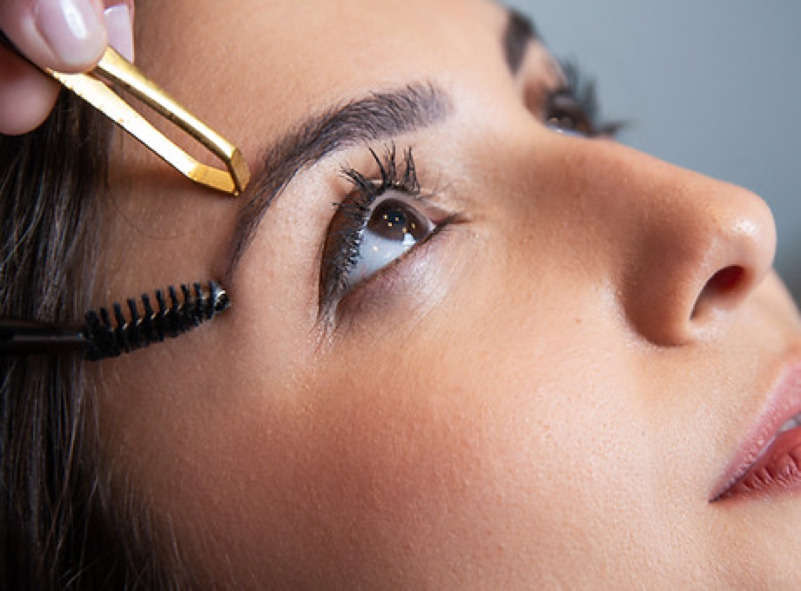
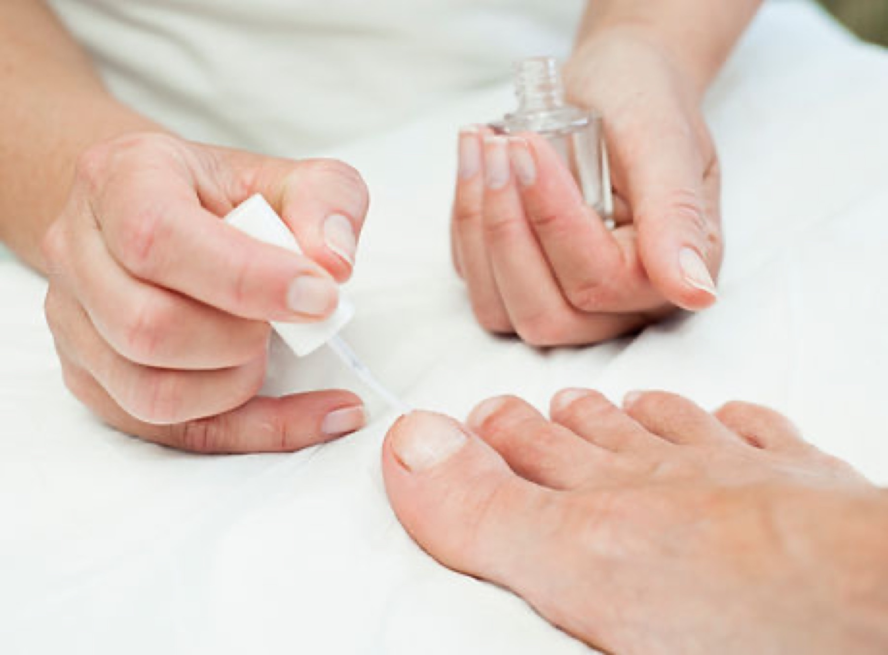
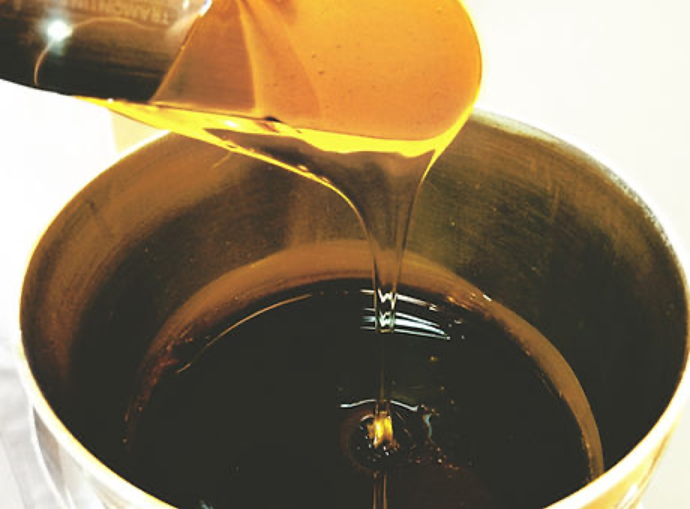
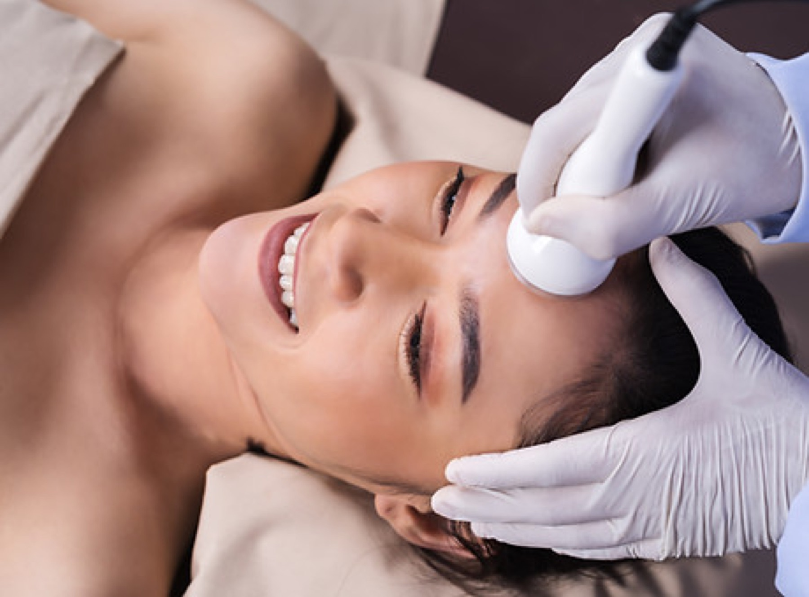
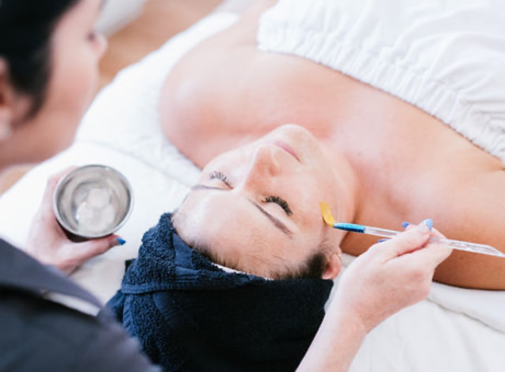
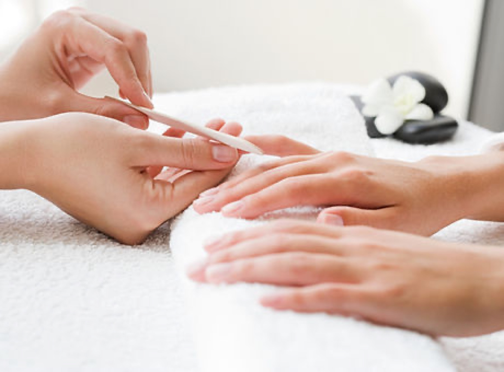
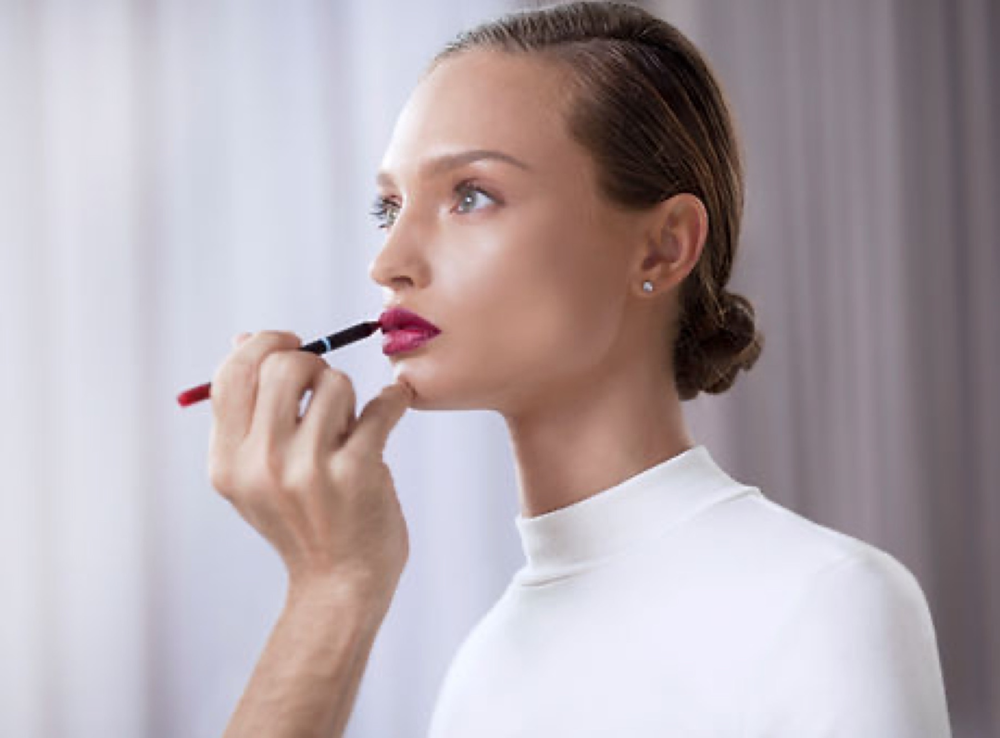
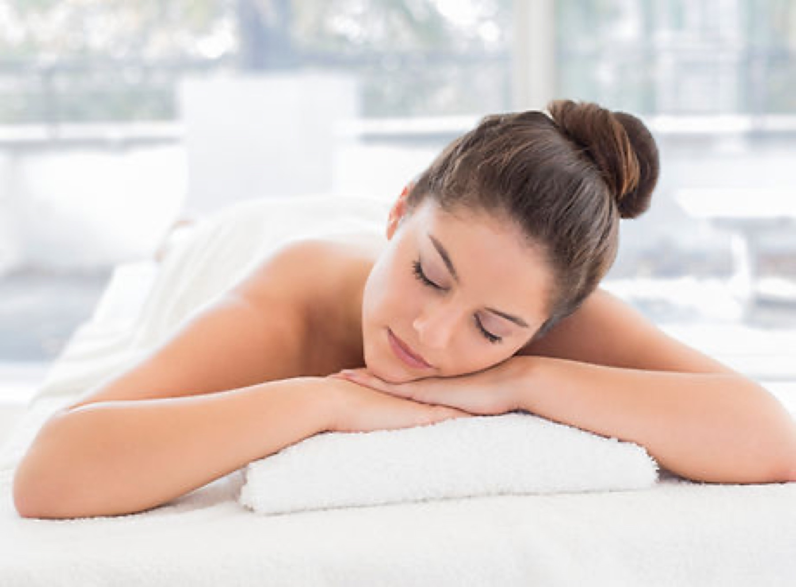

Hautanalyse vor jeder Behandlung
Erst schauen, dann behandeln. Jede Behandlung wird individuell auf die Bedürfnisse Ihrer Haut abgestimmt.
Kosmetik, Nageldesign und Fußpflege in Eschach. Klar beraten, präzise gemacht.
Termin online buchen
Behandlungen
Tippen Sie auf eine Zeile für die Details.
Unsere Füße tragen uns Tag für Tag durchs Leben und verdienen deshalb besondere Aufmerksamkeit.
Mit professioneller Pflege, individueller Beratung und einer sorgfältigen Behandlung unterstütze ich Sie dabei, Ihre Füße gesund, gepflegt und belastbar zu erhalten – für ein angenehmes Gefühl bei jedem Schritt.

Gepflegte Hände sind Ihre persönliche Visitenkarte.
Ob im Beruf oder im Alltag – schöne und gepflegte Hände hinterlassen einen positiven Eindruck. Mit einer professionellen Maniküre werden Nägel und Haut optimal gepflegt und in Form gebracht.
Bei unreiner Haut beginnt alles mit einer genauen Hautanalyse. Danach stimme ich Reinigung und Pflege Schritt für Schritt auf Ihr Hautbild ab und berate Sie zur Pflege für zu Hause.
Microdermabrasion und Microneedling geben der Haut den Impuls, sich aus der Tiefe zu regenerieren. Das Ziel dieser schmerzfreien Behandlungen ist ein gleichmäßiger Teint und eine Verfeinerung des Hautbildes.
Für einen langfristig sichtbaren Erfolg empfehle ich ca. 4-6 Sitzungen im Abstand von jeweils ein bis zwei Wochen. Das komplette Endresultat wird nach etwa zwei Monaten sichtbar, da die Kollagenneubildung diese Zeit in Anspruch nimmt. Tipp: Um ein optimales und langfristiges Behandlungsergebnis zu erzielen, sollten die passenden Behandlungsprodukte auch zu Hause angewendet werden. Gerne berate ich Sie vorab darüber.
Zu Beginn schauen wir gemeinsam, was Ihre Haut gerade braucht: trocken, ölig, empfindlich, unrein oder reif. Daraus ergibt sich die passende Behandlung und Pflege.
Eine professionelle Gesichtsbehandlung bei mir verbindet wirksame Hautpflege mit wohltuender Entspannung. Sie schenkt Ihrer Haut neue Frische und Ihnen eine kleine Auszeit vom Alltag.
Unsere Haut spiegelt oft wider, wie es uns geht. Stress, Belastungen oder hormonelle Veränderungen können sich im Hautbild zeigen. Deshalb wird jede Behandlung individuell auf die Bedürfnisse Ihrer Haut abgestimmt – für ein gepflegtes, ausgeglichenes und gesundes Hautbild.
Nehmen Sie sich bewusst Zeit für sich selbst.
Im oft hektischen Alltag kommen Entspannung und Regeneration häufig zu kurz. Eine wohltuende Massage kann dabei helfen, Verspannungen zu lösen, neue Energie zu tanken und Körper sowie Geist wieder in Einklang zu bringen. Genießen Sie einen Moment der Ruhe und lassen Sie den Alltag für kurze Zeit hinter sich.
Für jeden Anlass gibt es das perfekte Make-up. Egal ob dezentes Tages Make-up, Glamour Make-up für den Abend oder für die Hochzeit.
Ob Augenbrauen, Wimpern oder die Entfernung störender Härchen – oft sind es die kleinen Details, die das Gesamtbild harmonisch wirken lassen. Die Zusatzbehandlungen können individuell mit anderen Anwendungen kombiniert werden und sorgen für ein gepflegtes, natürliches Erscheinungsbild.
Mit einer professionellen Wachsbehandlung werden unerwünschte Haare gründlich und schonend entfernt. Für Frauen und Männer gleichermaßen geeignet.

Erst schauen, dann behandeln. Jede Behandlung wird individuell auf die Bedürfnisse Ihrer Haut abgestimmt.
Natürliche Hautpflege und Wirkstoffkosmetik, persönlich beraten.
Vor dem Haus gibt es einen Kundenparkplatz.

Über mich
Ich bin staatlich geprüfte Kosmetikerin und arbeite mit natürlicher Hautpflege und Wirkstoffkosmetik. Ich sage Ihnen ehrlich, was Ihre Haut braucht, und mache es sorgfältig.
Im Sinne der optimalen Behandlungsgestaltung kann ich nicht immer sofort ans Telefon gehen. Bitte hinterlassen Sie mir eine Nachricht mit Name und Telefonnummer oder schreiben Sie mir bei WhatsApp. Ich rufe Sie zurück.
Ablauf
Kurzes Gespräch, dann ein genauer Blick auf Ihre Haut.
Sorgfältig und abgestimmt auf das, was gerade gebraucht wird.
Eine persönliche Empfehlung für danach.




Ich fühle mich bei Anne sofort gut aufgehoben. Sie nimmt sich Zeit und erklärt, was sie macht.
Meine Haut sieht deutlich ruhiger aus, und die Pflegetipps sind alltagstauglich.
Ein ruhiger Ort und eine Pediküre, bei der ich wirklich abschalten konnte.
Neben den Behandlungen gebe ich mein Wissen in Schulungen und Kursen weiter. Bei Interesse schreiben Sie mir einfach.
Sie müssen nichts Besonderes tun. Kommen Sie am besten ungeschminkt zur Gesichtsbehandlung. Wenn Sie Medikamente nehmen oder Allergien haben, sagen Sie es mir bitte vorab.
Das hängt von der Behandlung ab. Bei der Terminvereinbarung nenne ich Ihnen den Zeitrahmen, damit Sie in Ruhe planen können.
Nach jeder Behandlung bekommen Sie eine persönliche Empfehlung für zu Hause. Bei Microdermabrasion und Microneedling sollten die passenden Produkte auch zu Hause angewendet werden. Gerne berate ich Sie vorab.
Bitte geben Sie mir so früh wie möglich Bescheid, per Telefon oder WhatsApp. Dann kann der Termin an jemand anderen gehen.
Kontakt und Anfahrt
Aktuell nehme ich vorläufig keine Neukunden mehr auf. Sehr gerne können Sie sich auf die Warteliste setzen lassen.
Danke, wir melden uns.